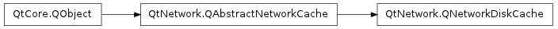

QNetworkDiskCache ¶

Synopsis ¶
Functions ¶
- def cacheDirectory ()
- def fileMetaData (fileName)
- def maximumCacheSize ()
- def setCacheDirectory (cacheDir)
- def setMaximumCacheSize (size)
Detailed Description ¶
The PySide.QtNetwork.QNetworkDiskCache class provides a very basic disk cache.
PySide.QtNetwork.QNetworkDiskCache stores each url in its own file inside of the cacheDirectory using PySide.QtCore.QDataStream . Files with a text MimeType are compressed using qCompress. Each cache file starts with ” cache_ ” and ends in ”.cache”. Data is written to disk only in PySide.QtNetwork.QNetworkDiskCache.insert() and PySide.QtNetwork.QNetworkDiskCache.updateMetaData() .
Currently you can not share the same cache files with more then one disk cache.
PySide.QtNetwork.QNetworkDiskCache by default limits the amount of space that the cache will use on the system to 50MB.
Note you have to set the cache directory before it will work.
A network disk cache can be enabled by:
manager = QNetworkAccessManager ( self ) diskCache = QNetworkDiskCache ( self ) diskCache . setCacheDirectory ( "cacheDir" ) manager . setCache ( diskCache )When sending requests, to control the preference of when to use the cache and when to use the network, consider the following:
# do a normal request (preferred from network, as this is the default) request = QNetworkRequest ( QUrl ( "http://qt.nokia.com" )) manager . get ( request ) # do a request preferred from cache request2 = QNetworkRequest ( QUrl ( "http://qt.nokia.com" )) request2 . setAttribute ( QNetworkRequest . CacheLoadControlAttribute , QNetworkRequest . PreferCache ) manager . get ( request2 )To check whether the response came from the cache or from the network, the following can be applied:
@Slot ( QNetworkReply ) def replyFinished ( reply ): fromCache = reply . attribute ( QNetworkRequest . SourceIsFromCacheAttribute ) print ( "page from cache? %d " % fromCache )
- class PySide.QtNetwork. QNetworkDiskCache ( [ parent=None ] ) ¶
-
Parameters: parent – PySide.QtCore.QObject Creates a new disk cache. The parent argument is passed to PySide.QtNetwork.QAbstractNetworkCache ‘s constructor.
- PySide.QtNetwork.QNetworkDiskCache. cacheDirectory ( ) ¶
-
Return type: unicode Returns the location where cached files will be stored.
- PySide.QtNetwork.QNetworkDiskCache. expire ( ) ¶
-
Return type: PySide.QtCore.qint64 Cleans the cache so that its size is under the maximum cache size. Returns the current size of the cache.
When the current size of the cache is greater than the PySide.QtNetwork.QNetworkDiskCache.maximumCacheSize() older cache files are removed until the total size is less then 90% of PySide.QtNetwork.QNetworkDiskCache.maximumCacheSize() starting with the oldest ones first using the file creation date to determine how old a cache file is.
Subclasses can reimplement this function to change the order that cache files are removed taking into account information in the application knows about that PySide.QtNetwork.QNetworkDiskCache does not, for example the number of times a cache is accessed.
Note: PySide.QtNetwork.QNetworkDiskCache.cacheSize() calls expire if the current cache size is unknown.
- PySide.QtNetwork.QNetworkDiskCache. fileMetaData ( fileName ) ¶
-
Parameters: fileName – unicode Return type: PySide.QtNetwork.QNetworkCacheMetaData Returns the PySide.QtNetwork.QNetworkCacheMetaData for the cache file fileName .
If fileName is not a cache file PySide.QtNetwork.QNetworkCacheMetaData will be invalid.
- PySide.QtNetwork.QNetworkDiskCache. maximumCacheSize ( ) ¶
-
Return type: PySide.QtCore.qint64 Returns the current maximum size for the disk cache.
- PySide.QtNetwork.QNetworkDiskCache. setCacheDirectory ( cacheDir ) ¶
-
Parameters: cacheDir – unicode Sets the directory where cached files will be stored to cacheDir
PySide.QtNetwork.QNetworkDiskCache will create this directory if it does not exists.
Prepared cache items will be stored in the new cache directory when they are inserted.
See also
PySide.QtNetwork.QNetworkDiskCache.cacheDirectory() QDesktopServices.CacheLocation
- PySide.QtNetwork.QNetworkDiskCache. setMaximumCacheSize ( size ) ¶
-
Parameters: size – PySide.QtCore.qint64 Sets the maximum size of the disk cache to be size .
If the new size is smaller then the current cache size then the cache will call PySide.QtNetwork.QNetworkDiskCache.expire() .